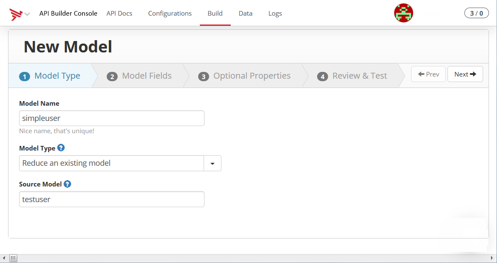
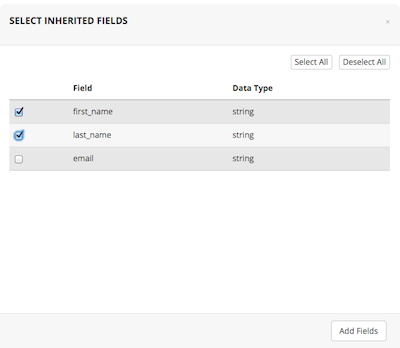
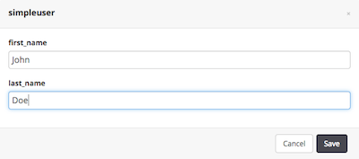
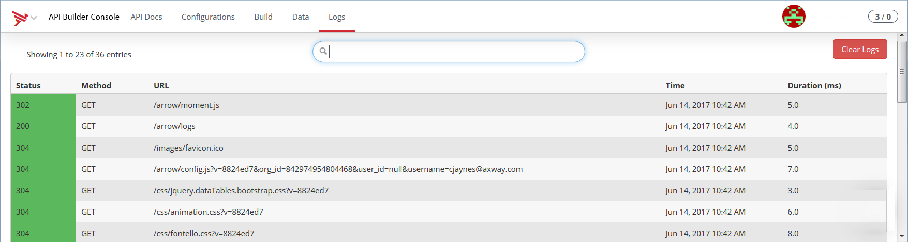

API Builder Getting Started
Introduction
This guide walks through the steps to create, run, and deploy an API Builder application. An API Builder application allows you to build and deploy API endpoints to the cloud that can be consumed by a client application.
Setup
To run API Builder, you need to install Node.js and Axway Appcelerator CLI. If you are using Axway Appcelerator Studio 4.0 or a later version, you already have the Appcelerator CLI automatically installed and can go to step 4.
-
Download and install Node.js from https://nodejs.org/en/#download. Note that API Builder has been tested with Node 6.x.
-
From a console window, execute the following command to install the CLI.
npminstallappcelerator -g -
After installation, execute the setup command to install the required components:
appc setupThis installation and setup can take several minutes.
-
Once the Appcelerator CLI installation and setup is completed, you will be prompted to login. Enter your email and password.
-
The CLI will send you an authorization token to your e-mail account (or a text to your mobile phone if provided during account activation). Enter the authorization token. If the authorization fails, a new code will be sent.
-
Once you are logged in, you will be queried whether or not you are developing Titanium applications. If you are developing Titanium applications, enter yes. Titanium will be automatically downloaded and installed.
Create a project
To create a new project:
-
Navigate to your workspace directory and execute the following command:
appc new -t arrowAppcelerator CLI will prompt you for a project name.
-
Enter a name for your project. Once you enter a project name, Appcelerator will create a new API Builder project.
-
Navigate to the project directory. For example: projectname
cdprojectname
Run the project
To run the project locally:
-
From the project directory, execute the following command:
appc runThe CLI will download and install any dependencies for the project, then start the application. The application will launch a server that you can access from a browser or other clients. As the app is launching, you will see the various services it is starting and the localhost console URL for the application.
-
Open a browser and navigate to the Admin Console user interface (UI) of application . Typically, the URL of the Admin Console UI should be http://localhost:8080/console . Check the console output to verify the URL.
Access the admin site
Review the navigation bar and tabs. You can use the following tabs in the navigation bar:
-
API Builder – provides a getting started guide to help you start building API endpoints.
-
API Docs – auto-generated documentation about your API endpoints. Provides help for the client application to access your application.
-
Build – interface to help you build models. A model represents data stored from another source.
-
Data – interface to help you manage your models similar to a content management system.
-
Logs – lists of access logs, clients trying to access your application.
-
Registry – lists components that your application can install and use.
You can disable the admin console by changing the configuration settings in the conf/default.js file. For now, let's explore some of the features of the admin console.
Create a new model
Let's create a new model using the admin console. In the admin console:
-
Click the Build tab.
-
In Step 1: Model Type
-
In Model Name text box, enter "simpleuser".
-
In the Model Type drop-down, select Reduce an existing model.
-
In the Source Model, enter "testuser".
 -
Click Next.
In Step 2: Model Fields
-
Click View Fields. The Select Inherited Fields dialog appears.
 -
Select the first_name and last_name fields.
-
Click Add Fields.
-
Click Next.
-
-
In Step 3: Optional Parameters
-
Under Generate API endpoints for these methods, select only Create, Read, Update and Delete. Since Delete All is not checked, the DELETE api/simpleuser endpoint will not be generated, but all other default endpoints for models will be generated.

-
Click Next.
-
-
In Step 4: Review & Test
-
Look over the code that will be generated.
-
Click Save Model.
-
If you look in your project's models folder, notice you have a new file called simpleuser.js. This file was just created by the admin console. Instead of creating a model using the admin console, you can define one using JavaScript files in the project's models directory.
Add model data
Let's add some data using our new model. In the admin console:
-
Click the Data tab.
-
Click simpleuser in the left navigation bar.
-
Click New, which opens a new input dialog.
-
Enter a first and last name for the model.
 -
Click Save.
-
Repeat step 3 - 5 to add more users.
As data is added to the model, the page is updated.
Access model data
Now that you have created a few simpleuser models, let's try to retrieve the model data from the application. In the admin console:
-
Click the API Docs tab.
-
Click APIs in the left navigation bar. The admin console presents a list of all API endpoints that your application exposes.
-
Click simpleuser in the left navigation bar. The admin console presents all the API endpoints that can be used to access the simpleuser model.
-
In the GET api/simpleuser/query method, click the CURL label to see the curl example.

-
Copy the curl command and paste it in a new terminal command window.
The command will return the first ten users (if you have ten users). -
Click the Logs tab in the admin console to see information about your requests.

Test other endpoints
By default, in a new API Builder project, you can navigate to the apidoc and example paths, that is, http://localhost:8080/apidoc and http://localhost:8080/example.
The apidoc path presents the same information as the API Docs tab in the admin console, except it only displays the Introduction and APIs sections.
The example path shows a simple example of an API Builder Web interface. An API Builder Web interface creates an API endpoint with access to a render engine and your Model data that displays HTML content.
After locally testing the application, let's try it out in the cloud. To stop the server, hit control + C on your keyboard in the terminal.
Deploy the project
To deploy the project to the cloud:
-
From the project directory, execute the following command:
appc publishIt will take a few minutes for your application to be deployed to API Runtime Services. After the command completes, the URL to your application will be outputted in the console.
Appcelerator Command-Line Interface, version0.2.194Copyright (c)2014-2015, Appcelerator, Inc. All Rights Reserved.Installing dependencies... ArrowProjectDeploying the application to the Appcelerator Cloud. One moment...App published, waitingfordeployment to completeApplication deployed to https://<SUB_DOMAIN_TOKEN>.cloudapp-enterprise-preprod.appctest.comPublished ArrowProject -
Let's quickly test the published application. In your browser, navigate to your published cloud application. You should see the API Builder Logo.
-
Next, go to the project's documentation. Add the /apidoc path to the end of the URL to retrieve the application documentation and endpoints. Retrieve the curl example of the query endpoint and paste it in the terminal. The command should return the same results when you tested the project locally.
View analytics
To view analytics about your project, go to the Appcelerator Dashboard.
-
In a browser, navigate to https://platform.appcelerator.com.
-
Click the Apps menu and select All Projects. You will be presented with a list of all your applications.
-
Locate your new API Builder application. There will be two entry types for your application: API Builder and Mobile Backend Services (MBS). The API Builder application is the published application that you interact with. The Mobile Backend Services datasource is essentially cloud storage where all your model data (at least for this example) is stored. All the simpleuser model data you entered previously is stored here.
-
Click the API Builder type of your application. You will be presented with an analytics overview of your application with data about API calls and the server(s) your application is running on.

-
Click the tabs in the left navigation panel to view more detailed information about your application.
Next steps
Review the API Builder Project to learn more about the API Builder projects and API Builder Tools and to learn how to build components for your API Builder project.